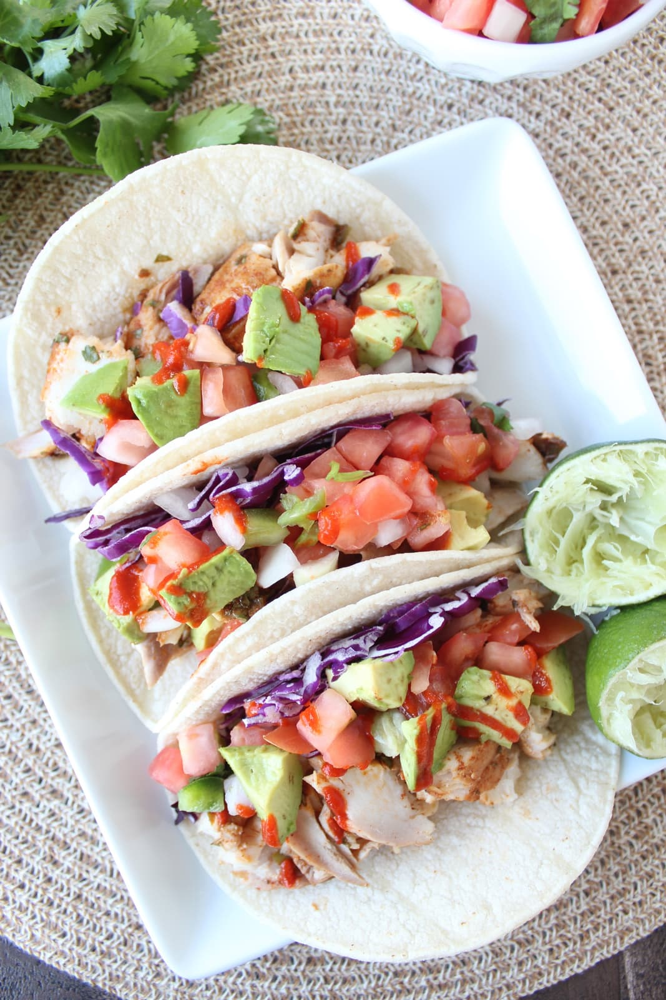

Fish Tacos

How to cook
Firstly, make a pico de gallo by chopping half an onion, dicing a
whole tomato, and a chopping half a bunch of cilantro. Mix it all with
half or a whole lemon and salt to taste. Refridgerate until serving time.
Chop red cabbage and avocado into thin slices, if desired.
Choose your preferred filet of fish and season heavily. Pan fry, bake,
grill, or broil your fish according to the internet. Remove from cooking
medium and split/mash the meat side of the fillet with the edge of your
spatula. Warm tortillas on a skillet and keep them warm in between a serving
towel. To serve, top a warmed tortilla with fish, pico de gallo and/or
cabbage and avocado.
Ingredients
- Choice of fish- 1 lb fillet
- Corn or flour taco sized tortillas
- Red cabbage
- Avocado
- Onion of your choice- 1/2
- Roma Tomato- 1
- Cilantro- 1 bunch
- Fish seasoning- salt, pepper, paprika, garlic powder, onion powder, whatever you want
Steps
- Chop half an onion
- Dice a whole Roma tomato
- Chop half a bunch of cilantro
- Mix all and add salt and half or whole lemon, to your taste, and refridgerate
- Cut red cabbage and avocado into thin tortilla length slices
- Season fish fillet with combination of optional seasonings, to taste
- Cook fish thoroughly using preferred method
- Near end of fish cooking, warm tortillas and store in between containment towel
- Once cooked, split up fish with end of spatula to make seperate from skin (if present)
- Top tortilla with fish, then pico de gallo, and cabbage and/or avocado if desired